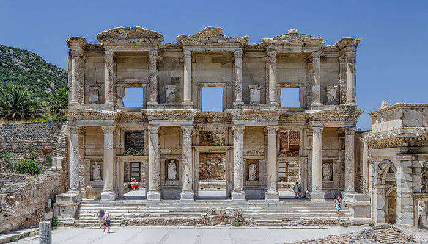
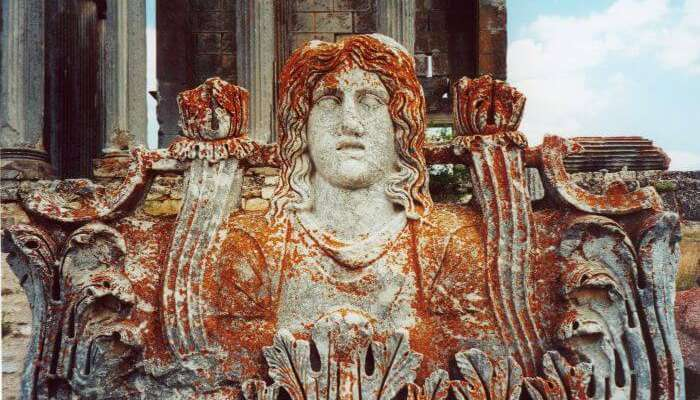
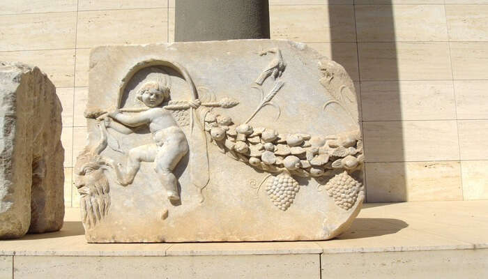
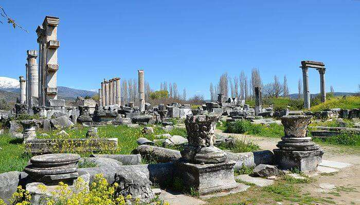
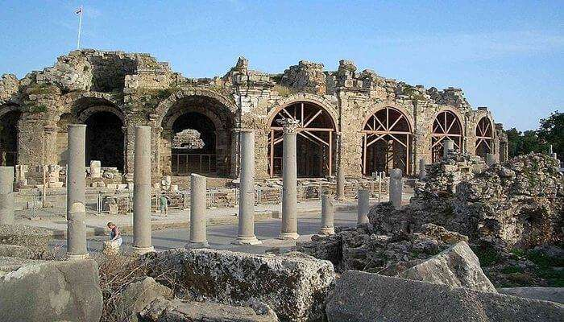
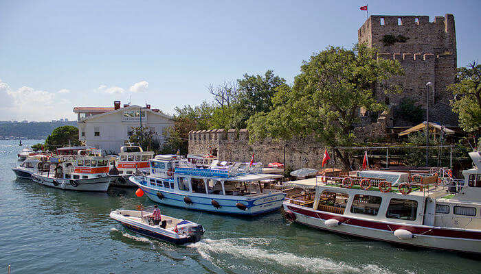
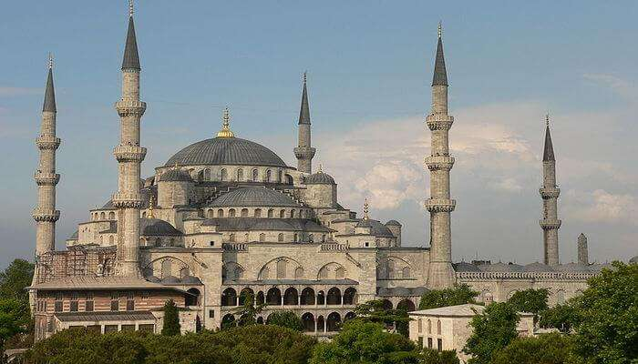
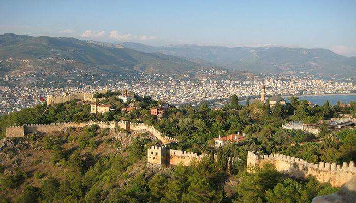
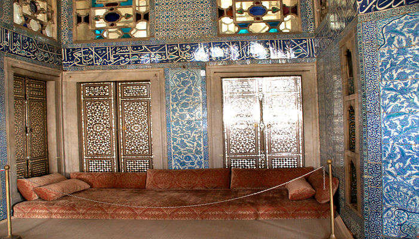
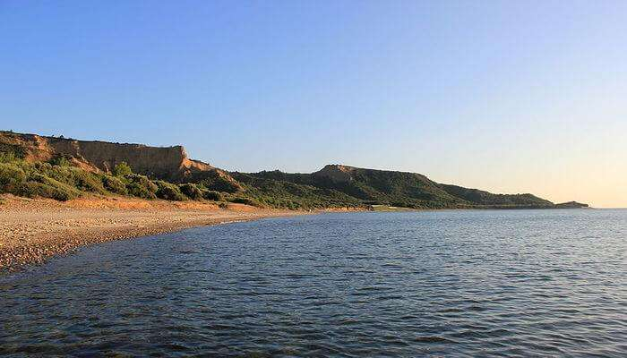

The land of historic significance, a nation with great cultural depths – Turkey, its charm is such that it attracts millions of tourists year after year. Visitors can’t have enough of this place. Turkey has so much to offer that a tourist might fall short of time to visit places, but Turkey will never get exhausted of places you must visit in whatever time you have. So here we are with a list of 10 must-visit historical places in Turkey, making things easier for you when you are packing your bags with tickets to Turkey lying in it!
Built in the 10th century BC, this city flourished under the Roman Republic. It was established as a port and was an important commercial centre. Either take a taxi or rent a bike. Alternatively, take mini-buses — the cheapest way to travel.
Aizanoi, a city that has many relics of universal value, was one of the most important cities during the Roman rule. Its status as a commercial road network had gained utmost importance.
There are many popular historical places in Antalya – the most famous being the Antalya museum. One of Turkey’s largest, it has 13 exhibition halls and an open air gallery. This museum highlights the history of the Mediterranean and Pamphylia regions. The magnificent display of artifacts makes the visit to this place worth every penny.
Aphrodisias, the city of the Aphrodite (the Goddess of love), is one of the most impressive historical sites in Turkey. Explore the ruins, tour the museum, and to do any justice to the beauty of this place you will need to spend at least 3 hours.
Side, an ancient Greek city, is home to many tourist spots which are both enjoyable and historically valuable. The temple of Apollo, the Aspendos, the Roman ruins, the Pamukkale bath, and the Duden falls are a few must visit places. Parasailing, rafting, scuba diving, and jeep safari are a few must do adventures while at Side.
Anadoluhisari, a fortress located in Istanbul, was built by the Ottoman Sultan between 1393 and 1394. One of the best historical places in Istanbul, it is also the oldest Turkish architectural structure built in Istanbul and was converted to a museum during the 1990’s. Although the inner museum is not open to public, the outer walls are still accessible and are worth a visit.
One of the most photogenic structures and most famous historical places in Turkey, the Blue Mosque is like a social complex. It features a mosque, a madrasa, Sultan Resting Mansion, Turkish bath, a fountain, a hospital, Mekteb-I Sıbyan, rental rooms, and homes. On a visit to this most famous tourist attraction, one must not forget to pay a visit to ‘Arasta’, which is at the back of the museum and is surrounded by Mosaic Museum with shops selling souvenirs.
If you are planning to visit the best historical monuments in Turkey, it will be a shame if you miss the Alanya castle. Then a castle, now an open air museum, it offers picturesque view of the turquoise waters that flow alongside. This castle is surrounded by a four mile wall that features about 140 towers.
Pilgrims, historians, architect enthusiasts, romantic couples, and even simple tourists, this place appeals to everyone. The exotic buildings and the sprawling gardens make a visit to this place a memorable one. You will need at least half a day to explore this place.
The youngest amongst the historical places in Turkey, the Anzac cove – a site of World War I – was the main base for the Australian and New Zealand Army Corps (ANZAC) for eight months during one of the campaigns of the war.